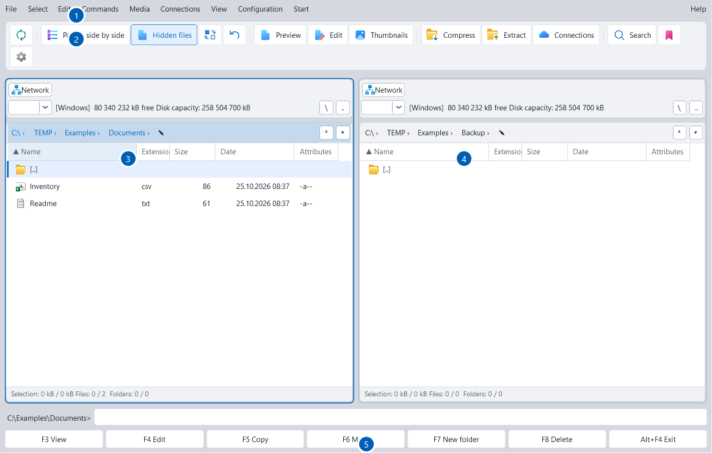

Two panels. One workspace.
Browse side by side, stack your panels or focus on one. Tabs, saved views and workspaces keep your folders close.
From everyday folders to network drives and the cloud. Bring your files together in a thoughtful, two-panel workspace.
The familiarity of a classic file manager, with the tools you need for today’s files.
Browse side by side, stack your panels or focus on one. Tabs, saved views and workspaces keep your folders close.
Copy and move with explicit conflict choices, background queues and optional SHA-256 verification.
Preview images, documents, Markdown and source code. Find what you need before opening another application.
Browse and create archives, extract files and work with split volumes alongside your everyday folders.
Batch rename, search metadata, find duplicates and compare files or folders with focused tools.
Explore folder sizes in interactive charts, compare saved analyses and inspect physical disk SMART diagnostics.
Move between your computer, network servers and your own cloud accounts. Keep the same two-panel workflow wherever your work takes you.
Cloud connections are optional. You sign in with your own account. Google OAuth verification is still pending.
How your data is handled →
Actual application screenshot from the user guide. Click to enlarge.
A desktop workspace you can make your own, from panel layouts and keyboard shortcuts to themes and languages.
Choose the package that fits the way you work.
File Compass is currently in development. Download links will appear here when the public packages are ready.